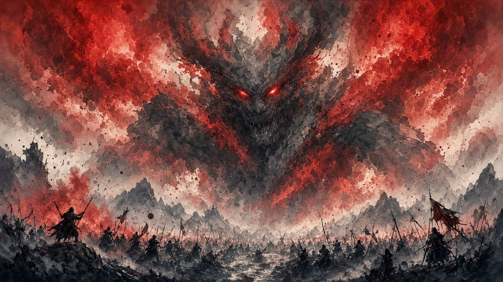

第一條血
- 刀連、苦無、上線、橫掃、空中抓。
- 手裏劍窗 0:00–0:44。純彈窗 0:00–0:52。三刀窗 0:00–0:47。
- 姿勢死快過血死。貼住。


真正常用就一把手裏劍。拍擊種子幫你消幻影，冇都打得。
三條 Kritical Slicer 片都有片主章節。一階段同二階段分開嵌。危技（橫掃、空中抓）喺純彈片入面：普通刀先彈，紅字要跳或者退。
預兆：Kritical Slicer 章節：0:00 一階段，0:44 入二階段。手裏劍無傷
等佢離開線、或者半空換線先擲。企喺線上會被彈開，浪費忍義
0:00–0:44 · a-2fIL_f540 @ 0:00 → · Kritical Slicer · 章節 VERIFIED
預兆：0:44 起。幻影出場，手裏劍仍然係將佢打落地下嘅工具
佢上線就打落，唔好俾佢喺上面吟。幻影處理睇純彈二階段卡
0:44–1:35 · a-2fIL_f540 @ 0:44 → · Kritical Slicer · 章節 VERIFIED
預兆：純彈片 0:00–0:52。普通刀先可以彈
橫掃：紅字就跳，踩頭。空中抓：紅字後退。兩種都格唔到
0:00–0:52 · p9fFgk6xyg4 @ 0:00 → · Kritical Slicer · 章節 VERIFIED
預兆：0:52 起純彈。佢彈指召喚，之後幻影會化蝶
有拍擊種子就企中間用一粒。冇就繞場，等佢再彈指，幻蝶用柱擋或者大圈跑。唔好同時追夫人同幻影
0:52–2:16 · p9fFgk6xyg4 @ 0:52 → · Kritical Slicer · 章節 VERIFIED
預兆：劍のみ片章節 0:00–0:47。貼身壓姿勢
砍到佢彈開你把刀，就準備彈佢下一串。多數係三下然後彈。唔好無腦連砍
0:00–0:47 · eBVS9KX7XlQ @ 0:00 → · Kritical Slicer · 章節 VERIFIED
預兆：0:47 起。幻影之間仍然係三刀一彈
幻影散咗先貼返。苦無可以格。蝶雨唔好格，閃或者躲柱
0:47–2:27 · eBVS9KX7XlQ @ 0:47 → · Kritical Slicer · 章節 VERIFIED
拍擊種子唔多。一場用一至兩粒就夠。冇種子嘅走位喺 二階段純彈 睇到。口播細節喺下面 FightinCowboy。
口播講種子、柱、空中抓、三刀節奏。實戰秒數喺上面章節卡。
手裏劍時機、兩種危技、幻影同幻蝶、三刀一彈。全片 5:40 · 鎖窗 0:00–5:40
另一條口播全片 3:59，對住上面章節睇 · 鎖窗 0:00–3:59
階段秒數跟 Kritical Slicer 描述入面嘅 Chapters。橫掃同空中抓冇獨立短片，鎖喺純彈一階段窗，口播細節喺 FightinCowboy。拍擊種子用法寫喺打法，實戰幻影睇二階段純彈窗。
招式唔清楚、想加邊個 Boss、有錯漏——丢句說話。留言經 Netlify Forms 直達網主信箱／後台，唔再只係本機保存。
你嘅意見已送出俾網主。想再講可以繼續填。